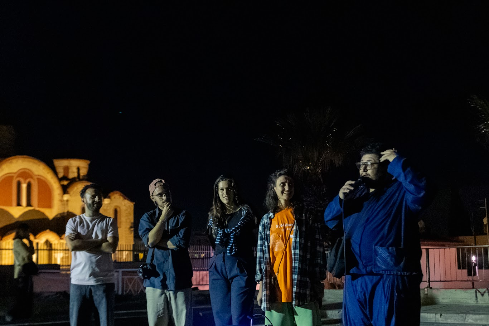
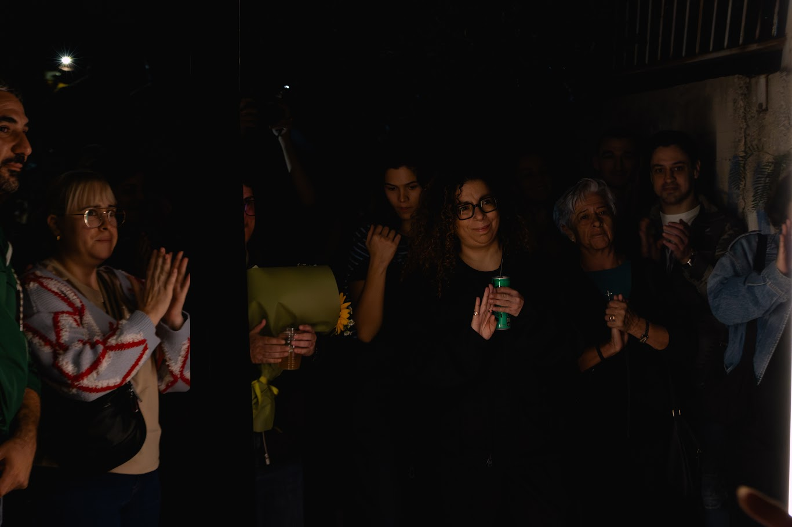
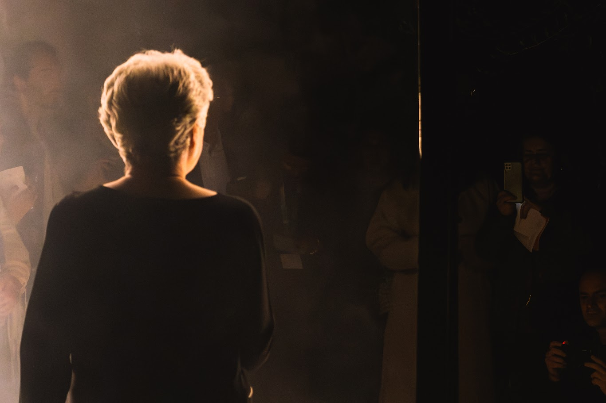
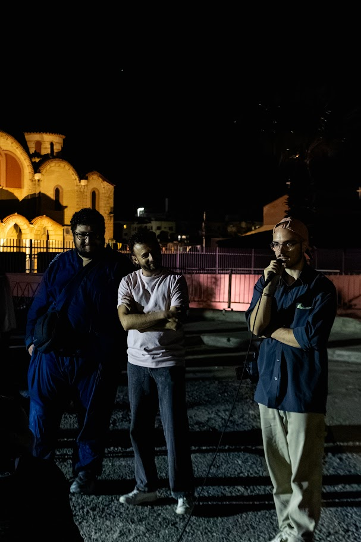
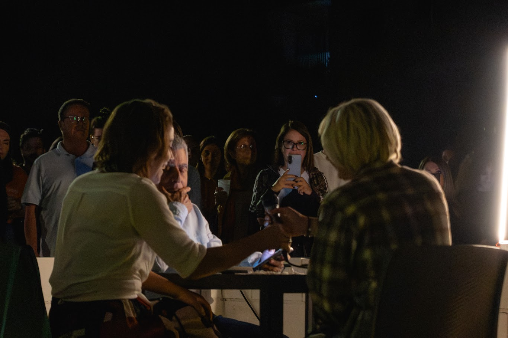
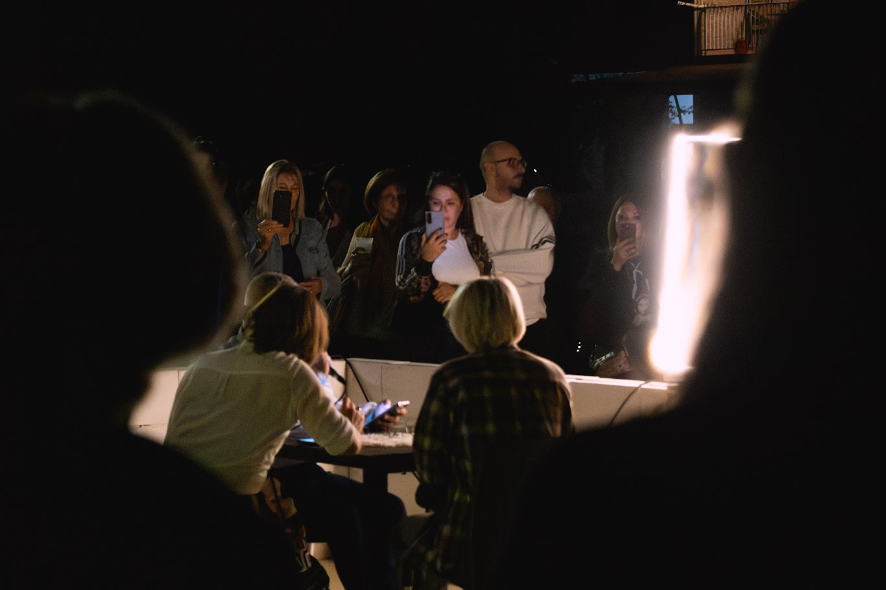

Memory Forms: The paths we walk
2026
Memory Forms: The paths we walk is a participatory procession through the Agioi Anargyroi refugee neighbourhood in Larnaca, temporarily reimagining selected locations as villages from the Famagusta region, from which residents and their families were displaced in 1974.
Illuminated frames mark these locations, where residents share personal stories. Moving from one location to the other, visitors encounter a living archive of places, voices and memories embedded within the neighbourhood.
Through collective movement, storytelling and temporary spatial interventions, the procession creates an alternative map of the neighbourhood, connecting the geography of the former villages with the everyday spaces of the present.



Stop 01 — Vadili
Frame construction: A. G Efthymiades Electrical Installations LTD




Stop 02 — Kóma tou Gialoú
Moderator: Nayia T. Karacosta

